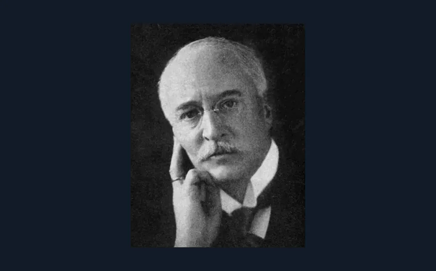

Chapter 3: Diesel 1913 失蹤之謎

一部引擎，連發明人都帶住謎團離開世界
Rudolf Diesel 唔係只係「柴油機」個名咁簡單。根據 Britannica 整理：佢 1858 年出世，1890 年代發展出壓縮點火引擎，1897 年成功示範高效率四衝程 compression ignition engine。到 1913 年 9 月，Diesel 由 Antwerp 登上郵船 SS Dresden 去英國，第二朝人不見了，艙房床鋪未瞓過，外界一般認為佢喺 English Channel 遇溺，但原因一直有謎團。
點解呢個故事適合放入 B15？因為 diesel engine 嘅核心，正正係 Part B 最基本嘅一件事：汽油機靠 spark plug 點火，柴油機靠高壓縮令空氣升溫，再噴入柴油自燃。你明呢個分別，就自然明點解柴油機壓縮比高、火花塞唔係必要部件、燃油系統入氣會好麻煩。
B15 考嘅四衝程：intake、compression、power、exhaust，好多初學者會死背「Suck, Squeeze, Bang, Blow」。但如果你用 Diesel 個故事記，就係：先吸入空氣，壓到夠熱，噴油燃燒做功，最後排走廢氣。考 B.1 圖解題，見到活塞向上、排氣閥開，就唔好畀顏色同箭嘴嚇親，佢就係 exhaust stroke。
由故事學知識
→ B15 引擎結構 — Diesel = compression ignition；Petrol = spark ignition。四衝程要睇活塞方向同閥門狀態。
→ 跳去 B15 詳細解釋Note: 易錯位 — 「壓縮」同「排氣」都係活塞向上；分別係閥門：壓縮兩閥關，排氣係 exhaust valve 開。
Sources
- Research sources: Britannica Rudolf Diesel biography; 1897 engine demonstration; SS Dresden disappearance in 1913.
- Image:
Rudolf Diesel (cropped).jpg, unknown photographer, Wikimedia Commons, Public Domain.